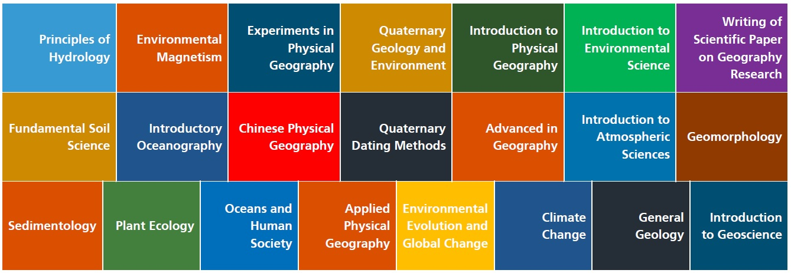
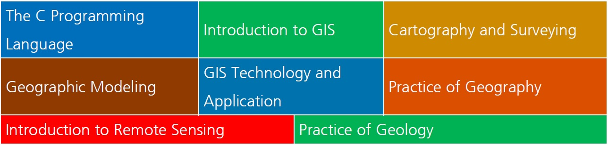
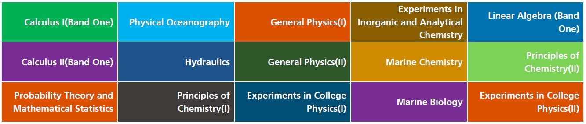

Home CV Research Academics Gallery Contact
Academics
Course record
Current full transcript of Tian Zhao
Earth sciences (GPA 89.03/100)

Programming, technology and practice (GPA 87.5/100)

Mathematics and fundamental physical sciences (GPA 90.82/100)

I have been taking Marine Geology and Coastal Geomorphology, and attended two graduate courses (Marine Sediment Dynamics and Coastal Hydrodynamics) last semester.
Thank you for your attention! Click here to scroll back to the top.